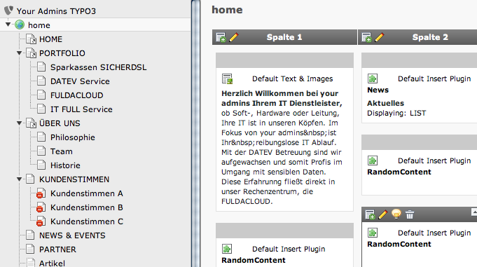

Michael Cannon
Aihrus
US, South Korea, Taiwan, India, Germany
memory_limit = 64M upload_max_filesize = 100M post_max_size = 100M
<FilesMatch "\.js\.gzip$"> AddType "text/javascript" .gzip </FilesMatch> AddEncoding gzip .gzip AddType application/x-javascript .js ExpiresByType text/javascript "access plus 1 year" AddOutputFilterByType DEFLATE text/css application/x-javascript
mod_rewrite updates
20 = FLUIDTEMPLATE
20 {
file = {$template.1.file}
partialRootPath = {$page.partialRootPath}
layoutRootPath = {$page.layoutRootPath}
variables {
sidebarWidth = COA
sidebarWidth {
10 = TEXT
10.value = {$ministries.width}
20 = TEXT
20.value = /
30 = TEXT
30.value = 3
stdWrap.prioriCalc = intval
}
}
}
// make BE permission access lists easier to manage with checkboxes than multiple select $TYPO3_CONF_VARS['BE']['accessListRenderMode'] = 'checkbox'; // BE compression enabling $TYPO3_CONF_VARS['BE']['compressionLevel'] = 5; // don't allow access unless it was specifically given $TYPO3_CONF_VARS['BE']['explicitADmode'] = 'explicitAllow'; // cleaner BE temp file URLs $TYPO3_CONF_VARS['BE']['versionNumberInFilename'] = 1; // FE compression enabling $TYPO3_CONF_VARS['FE']['compressionLevel'] = 5; // keep FE user logged in unless they specifically log out $TYPO3_CONF_VARS['FE']['permalogin'] = '1'; // cleaner FE temp file URLs $TYPO3_CONF_VARS['FE']['versionNumberInFilename'] = 1; // don't run development modes on a production server $TYPO3_CONF_VARS['SYS']['enableDeprecationLog'] = ''; $TYPO3_CONF_VARS['SYS']['sqlDebug'] = false; $TYPO3_CONF_VARS['SYS']['syslogErrorReporting'] = '0'; $TYPO3_CONF_VARS['SYS']['systemLogLevel'] = '4';
<INCLUDE_TYPOSCRIPT: source="FILE:EXT:extkey/folder/file.txt"> <INCLUDE_TYPOSCRIPT: source="FILE:fileadmin/typoscript.ts"> <INCLUDE_TYPOSCRIPT: source="FILE:EXT:in2master/Configuration/TSConfig/rte.ts">
in ext_localconf.php:
t3lib_extMgm::addPageTSConfig('<INCLUDE_TYPOSCRIPT: source="FILE:EXT:in2master/Configuration/TSConfig/rte.ts">');
t3lib_extMgm::addPageTSConfig('<INCLUDE_TYPOSCRIPT: source="FILE:EXT:in2master/Configuration/TSConfig/page.ts">');
t3lib_extMgm::addUserTSConfig('<INCLUDE_TYPOSCRIPT: source="FILE:EXT:in2master/Configuration/TSConfig/user.ts">');
in ext_tables.php:
t3lib_extMgm::addStaticFile($_EXTKEY, 'Configuration/TypoScript/main',
'in2: 010 Config, General');
config {
concatenateJsAndCss = 1 # Merge CSS & JS: Merges Stylesheet and JavaScript files referenced in the Frontend together. For TYPO3 4.5+
disableBaseWrap = 1 # Disable Base Extension Wrap
disableImgBorderAttr = 1 # Disable border attribute of img tags
disablePrefixComment = 1 # Disable Extension BEGIN/END in HTML
inlineStyle2TempFile = 1 # Link to TYPO3 CSS:If set, the inline styles TYPO3 controls in the core are written to a file.
minifyCSS = 1 # Minify CSS: CSS files will be minified and compressed. For TYPO3 4.5+
minifyJS = 1 # Minify JS: JS files will be minified and compressed. For TYPO3 4.5+
moveJsFromHeaderToFooter = 1 # Move JavaScript to Footer
pageTitleFirst = 1 # Page Title First:If set (and the page title is printed) then the page-title will be printed BEFORE the template title.
redirectOldLinksToNew = 1 # Redirect Old Links to New
removeDefaultCss = 1 # Remove Default CSS: Default CSS in the header will be removed.
removeDefaultJS = external # Remove Default JS: Default JavaScript in the header will be removed.
sendCacheHeaders = 1 # Send Cache Control Headers:Output cache-control headers to the client
typolinkCheckRootline = 1 # Correct Multiple Domain Links
typolinkEnableLinksAcrossDomains = 1 # Enable Links Across Domains: Post TYPO3 4.2
uniqueLinkVars = 1 # Unique Link Vars: Prevent links with the same parameter more than once.
}

Ask, speak up, mumble aloud
Michael Cannon
Aihrus
mc@aihr.us